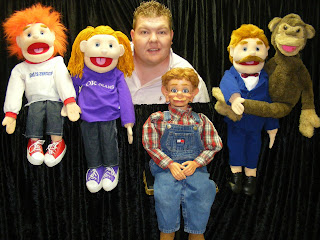

Those in need
10/30/2011

Joe Overfelt is children's minister at one of the largest homeless shelters in Virginia. Currently he is working with 50-75 homeless children as well as their parents. He also works with homeless men and women in the drug and alcohol rehab program using the characters you see in the photo above.
But Joe feels an old man figure could be very effective in communicating with those he ministers to who sometimes are very angry. Through a vent figure with similar character issues he could demonstrate in a fun way how God can transform lives.
While Joe is a paid staff member, the shelter receives no government funds. Rather the shelter, http://www.rescuemission.net/, is entirely supported by donations. As you might imagine, the staff salaries are meager. So I am wondering if there is someone reading this who might have just the hard figure character Joe is looking for that they would be willing to sell at a discount, or even donate. I know it's a long shot, but I thought I'd mention it.
What I've suggested to Joe is what I've suggested to many in the past who have similar need, and that is that he make his need known to local volunteers who either tour or give some hours' time to the shelter. It is not uncommon for a person or group of persons to take on the project of funding a new vent figure for a worthy recipient. Over the period of 40 years I'd estimate we sell one or two figures each year that were paid for in this manner. The funds are much more likely to come from a local contributor who knows firsthand the ventriloquist and his or her service ministry.